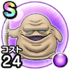

ドルイド
2章6話〜2章8話バギこころ最大コスト+4じゅもんダメージ+10%幻惑耐性+10%吸収耐性+10% / 8.0点
くわしい特徴
【ランク特殊効果】 バギこころ最大コスト+4じゅもんダメージ+10%幻惑耐性+10%吸収耐性+10%

2章6話〜2章8話バギこころ最大コスト+4じゅもんダメージ+10%幻惑耐性+10%吸収耐性+10% / 8.0点
【ランク特殊効果】 バギこころ最大コスト+4じゅもんダメージ+10%幻惑耐性+10%吸収耐性+10%